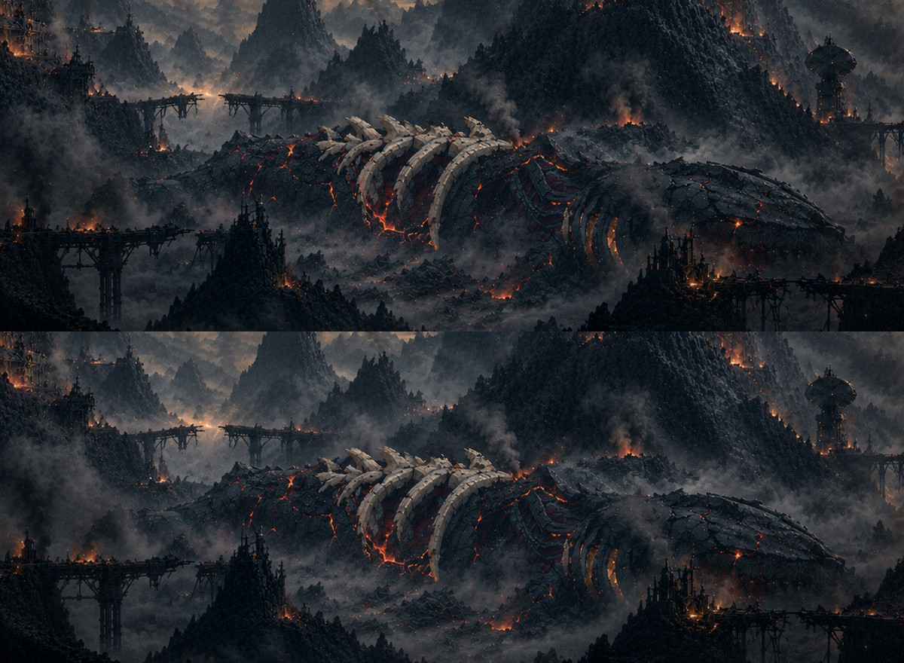
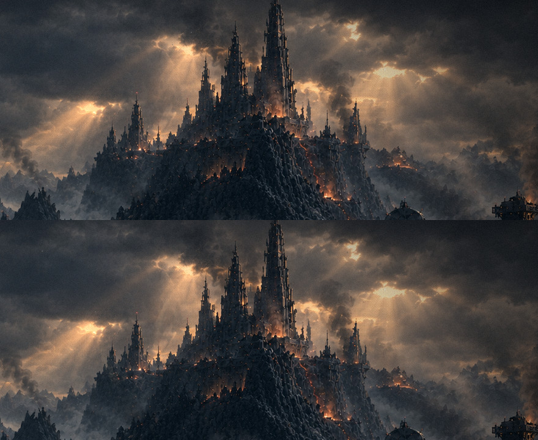

O amanhecer vivo, rodada 1: a bruma e os raios de sol
13/11 · bloco I, etapa 3, parte B · a tela final fechada em rodada2.html.
Os dois primeiros efeitos da lista, cada um filmado sozinho no jogo, com o texto escondido. A pintura não foi tocada: tudo vive por cima dela. Faltam a fumaça, o fogo, as brasas, a lava quase apagada e a cinza.
1. A bruma
As faixas de névoa do menu da noite, nos cinzas da névoa pintada e na metade da velocidade. Ela só anda sobre a névoa que a pintura já tem: as silhuetas pretas, o fogo e a lava ficam limpos, e sobre a carcaça ela quase não passa.
O vale de perto
A pintura sozinha (em cima) e com a bruma (embaixo)

2. Os raios de sol
Em cada uma das três aberturas das nuvens, um leque de fachos quentes que respiram, cada um no seu ritmo (de 7 a 13 s), e balançam um nada. Reforçam os raios pintados, não desenham outros, e passam atrás das torres.
O céu de perto
A pintura sozinha (em cima) e com os raios (embaixo)

Os dois juntos
O que eu preciso de você
- A bruma: a quantidade e a velocidade servem? Ela pode ser mais densa, mais lenta, ou passar mais (ou menos) sobre a carcaça.
- Os raios: a força e o ritmo da respiração servem? Eles podem ser mais discretos ou mais marcados.
Para ver no jogo: http://localhost:5173/?menu=amanhecer (os dois ligados);
&vida=bruma, &vida=raios ou &vida=0 ligam só um ou nenhum.